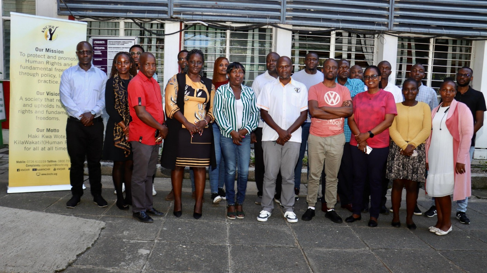
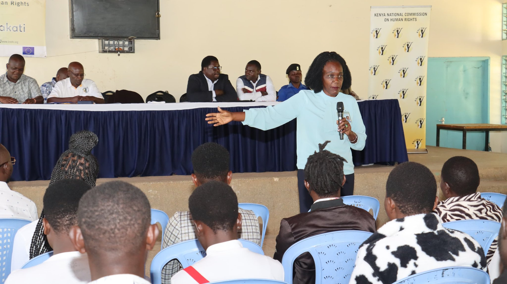
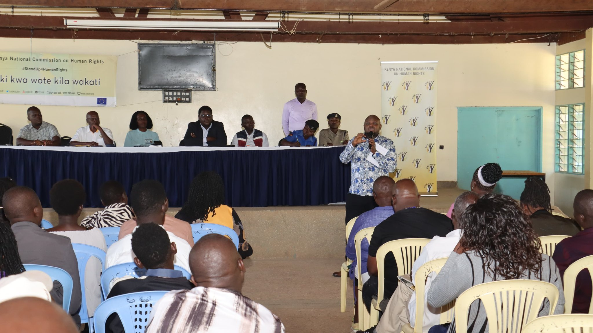
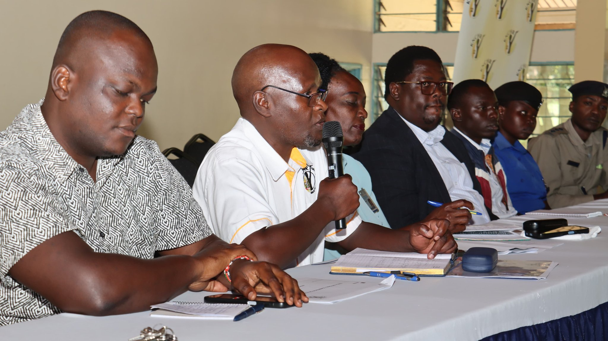
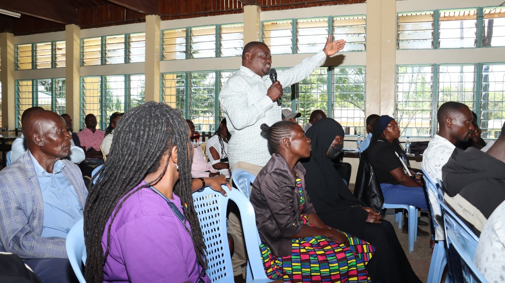

Reparations, Verification & Public Awareness Exercise — Western Kenya

The Kenya National Commission on Human Rights (KNCHR), under the leadership of Commissioner Dr. Wamalwa Dennis, conducted a week-long reparations verification and public-awareness exercise across eight counties in Western Kenya. This report outlines the background, objectives, activities, and significance of the exercise.
Background
Reparations for victims and survivors of historical injustices remain a central pillar of KNCHR’s mandate to advance justice, healing, and accountability. The exercise responded to the continued need to verify claims lodged by victims and survivors, and to enhance public understanding of the reparations process across affected communities in Western Kenya.

Objectives of the exercise
- To verify the identities, claims, and circumstances of victims and survivors of historical injustices.
- To ensure the accuracy, credibility, and integrity of the reparations process.
- To raise public awareness on the reparations framework and available avenues for redress.
- To strengthen community trust in, and engagement with, the reparations process.
- To reinforce accountability and human rights protections for affected populations.
Scope of activities
Over the course of the week, KNCHR teams undertook the following activities across the eight counties:
- Verification of claims: Confirmed the identities and circumstances of registered victims and survivors to ensure that reparations processes were accurate and responsive to the needs of affected communities.
- Community engagement: Held public awareness sessions with local leaders, victims’ groups, and members of the public on the reparations process and their rights.
- Public sensitization: Disseminated information on the reparations framework, eligibility, and the procedures available for seeking redress.

Commissioner’s remarks
Commissioner Dr. Wamalwa Dennis, who led the exercise, remarked:
“This process is vital in advancing justice, healing, and recognition for victims and survivors while strengthening accountability and human rights protections.”
The Commissioner reiterated KNCHR’s commitment to placing victims and survivors at the center of the reparations process, and to ensuring that the exercise contributed to long-term healing, justice, and restoration of dignity for affected communities.

Significance of the exercise
The exercise formed part of KNCHR’s continued mandate to:
- Promote and protect human rights across the country.
- Ensure accountability for past injustices.
- Support healing and reconciliation for affected communities.
- Strengthen the credibility and public trust in national reparations processes.

Conclusion
The reparations verification and public-awareness exercise across the eight counties of Western Kenya represented a significant step in KNCHR’s ongoing efforts to deliver justice and healing to victims and survivors of historical injustices. The Commission remains committed to ensuring that the process is thorough, victim-centered, and grounded in the principles of accountability and human rights protection.